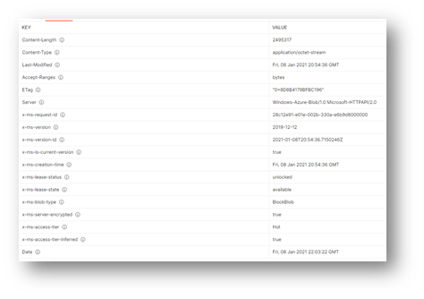

Managing concurrent uploads in Azure blob storage with blob versioning #
When you are building applications that need to have multiple clients uploading to the same object in Azure blob storage, there are several options to help you manage concurrency depending on your strategy. Concurrency strategies include:
- Optimistic concurrency: An application performing an update will, as part of its update, determine whether the data has changed since the application last read that data. For example, if two users viewing a wiki page make an update to that page, then the wiki platform must ensure that the second update does not overwrite the first update. It must also ensure that both users understand whether their update was successful. This strategy is most often used in web applications.
- Pessimistic concurrency: An application looking to perform an update will take a lock on an object preventing other users from updating the data until the lock is released. For example, in a primary/secondary data replication scenario in which only the primary performs updates, the primary typically holds an exclusive lock on the data for an extended period to ensure no one else can update it.
- Last writer wins: An approach that allows update operations to proceed without first determining whether another application has updated the data since it was read. This approach is typically used when data is partitioned in such a way that multiple users will not access the same data at the same time. It can also be useful where short-lived data streams are being processed.
Azure Storage supports all three strategies, although it is distinctive in its ability to provide full support for optimistic and pessimistic concurrency. Azure Storage was designed to embrace a strong consistency model that guarantees that after the service performs an insert or update operation, subsequent read operations return the latest update. With conditional headers present in the blob service REST API you can control all this logic in your applications, using headers such as If-Match and If-None-Match.
To understand how blob versioning can help with managing concurrent uploads, imagine the following scenario which requires an optimistic concurrency strategy:
Proseware, Inc. is developing a new mobile application which will allow customers manage photos on their devices such as memes and GIFs. To ensure customers can access their libraries from multiple devices, customers will be able to backup the contents of their libraries to the cloud. Customers will also be able to browse a existing marketplace of memes and GIFs and sync them to their library or publish their own unique memes to the marketplace. This means that multiple customers will need access to the same files, and Proseware, Inc. will implement de-duplication logic in the application to make sure that only one copy of a file exists at time in cloud storage, regardless of the number of customers who have that file in their library.
If User A and User B both have the same animated GIF on their device, when the clients upload their backups to cloud storage only one copy should remain. Proseware, Inc. cannot control when clients will upload and has determined that they will always attempt to upload the file. If it is a new file, it should be stored in the service in a manner that if another use attempts to upload the same file, only 1 copy will be retained over time. If the file already exists, only one copy is needed, and the upload can be discarded.
Blob versioning allows for the automatic retention of previous versions, with a new version created on each successful call to Put Blob or Put Block List. When combined with lifecycle management in blob storage, versions older than a specified number of days can be automatically deleted or moved to a different tier of storage (e.g., from hot to cool). With blob versioning, the application can be built in a way that allows for every client to always attempt their upload. If the file already exists, the upload will succeed, adding a new version which can they be safely deleted with lifecycle management after the specified retention period has passed. This removes the complexities of having to manage conditional headers and allows the application to meet its goals with out-of-the-box features of Azure blob storage that are easily configurable through the Azure portal.
Now that we understand the scenario and have seen how blob versioning can help, let’s look at a sample upload of the same file by four mobile clients.
-
Client 1 and Client 2 (BlockId QkJC) upload
awesomestmemeever.gifsimultaneously.PUT https://prosewarememestorage.blob.core.windows.netbackups/awesomestmemeever.gif?comp=block&blockid=QkJC&sv=2019-12-12&ss=bfqt&srt=sco&sp=rwdlacuptfx&se=2021-01-16T04:18:47Z&st=2021-01-08T20:18:47Z&spr=https&sig=XXXXXXXXXXXXPUT https://prosewarememestorage.blob.core.windows.netbackups/awesomestmemeever.gif?comp=block&blockid=QUFB&sv=2019-12-12&ss=bfqt&srt=sco&sp=rwdlacuptfx&se=2021-01-16T04:18:47Z&st=2021-01-08T20:18:47Z&spr=https&sig=XXXXXXXXXXXX -
Client 2’s upload finishes with a successful call to Put Block List before Client 1.
awesomestmemeever.gifis saved with VersionId 2021-01-08T20:38:09.3842765Z. The committed block list can be retrieved.GET https://prosewarememestorage.blob.core.windows.netbackups/awesomestmemeever.gif?comp=blocklist&blocklisttype=all&sv=2019-12-12&ss=bfqt&srt=sco&sp=rwdlacuptfx&se=2021-01-16T04:18:47Z&st=2021-01-08T20:18:47Z&spr=https&sig=XXXXXXXXXXXX<?xml version="1.0" encoding="utf-8"?> <BlockList> <CommittedBlocks> <Block> <Name>QkJC</Name> <Size>2495317</Size> </Block> </CommittedBlocks> <UncommittedBlocks /> </BlockList> -
Client 1’s upload finishes but cannot be committed as the block list has been purged when Client 2 saved. Client 1 will receive a
HTTP 400 InvalidBlockListexception. Client 1 issues aHEADrequest to see if the file exists as it may have been uploaded by another client.HEAD https://prosewarememestorage.blob.core.windows.netbackups/awesomestmemeever.gif?sv=2019-12-12&ss=bfqt&srt=sco&sp=rwdlacuptfx&se=2021-01-16T04:18:47Z&st=2021-01-08T20:18:47Z&spr=https&sig=XXXXXXXXXXXXIf the blob has been successfully committed by another client, Client 1 can disregard the error or if the blob was not present for any other reason, the upload can be repeated.
-
Client 3 attempts to upload the same file but experiences a transient network error, leaving uncommitted blocks as Put Block List is not called successfully due to missing blocks in the uncommitted block list. The uncommitted blocks are retained in the current version (last successful upload from Client 2).
GET https://prosewarememestorage.blob.core.windows.netbackups/awesomestmemeever.gif?comp=blocklist&blocklisttype=all&sv=2019-12-12&ss=bfqt&srt=sco&sp=rwdlacuptfx&se=2021-01-16T04:18:47Z&st=2021-01-08T20:18:47Z&spr=https&sig=XXXXXXXXXXXX<?xml version="1.0" encoding="utf-8"?> <BlockList> <CommittedBlocks> <Block> <Name>QkJC</Name> <Size>2495317</Size> </Block> </CommittedBlocks> <UncommittedBlocks> <Block> <Name>Q0ND</Name> <Size>2495317</Size> </Block> </UncommittedBlocks> </BlockList> -
Client 4 uploads the same file and is successful. The uncommitted blocks from Client 3’s request are purged, and a new version is created, VersionId 2021-01-08T20:54:36.7150246Z.
GET https://prosewarememestorage.blob.core.windows.netbackups/awesomestmemeever.gif?comp=blocklist&blocklisttype=all&sv=2019-12-12&ss=bfqt&srt=sco&sp=rwdlacuptfx&se=2021-01-16T04:18:47Z&st=2021-01-08T20:18:47Z&spr=https&sig=XXXXXXXXXXXX<?xml version="1.0" encoding="utf-8"?> <BlockList> <CommittedBlocks> <Block> <Name>RERE</Name> <Size>2495317</Size> </Block> </CommittedBlocks> <UncommittedBlocks /> </BlockList> -
After one day, the versions from the previous day are deleted and only the base blob remains.
HEAD https://prosewarememestorage.blob.core.windows.netbackups/awesomestmemeever.gif?sv=2019-12-12&ss=bfqt&srt=sco&sp=rwdlacuptfx&se=2021-01-16T04:18:47Z&st=2021-01-08T20:18:47Z&spr=https&sig=XXXXXXXXXXXX
Note that in this approach, there is no need for the If-None-Match:* conditional header. Clients can simultaneously upload to the same blob and a new version will be created for each successful call to Put Block List or Put Blob. For Get Blob requests, if a versionid is not specified in the parameters, the latest version of the blob will be retrieved, or the calling application can also provide a valid versionid to retrieve a previous version before it is deleted through the lifecycle management rule. If needed, the current versions can be retrieved using List Blobs.
GET https://prosewarememestorage.blob.core.windows.net/test?restype=container&comp=list&include=versions&sv=2019-12-12&ss=bfqt&srt=sco&sp=rwdlacuptfx&se=2021-01-16T04:18:47Z&st=2021-01-08T20:18:47Z&spr=https&sig=XXXXXXXXXXXX&prefix=awesomestmemeever.gif
The following is a sample lifecycle management rule which is filtered to only blob versions and deletes versions older than 1 day:
{
"rules": [
{
"enabled": true,
"name": "DeleteVersionsOlderThan1Day",
"type": "Lifecycle",
"definition": {
"actions": {
"version": {
"delete": {
"daysAfterCreationGreaterThan": 1
}
}
},
"filters": {
"blobTypes": [
"blockBlob"
]
}
}
}
]
}
In conclusion, blob versioning allows for both multiple uploads from clients and automated deletion of data that is now longer required while retaining the base blob. Only committed data is retained and there is no need for the use of conditional headers.